출발
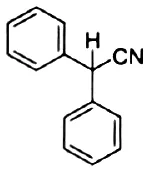
Diphenylacetonitrile1
18장 강심제(Doxapram · Milrinone) · 부정맥 치료제(Nifedipine · Verapamil · Diltiazem · Amiodarone) + 19장 혈압강하제(Enalapril · Benazepril · Ramipril · Amlodipine · Valsartan). KEY 18-1 Hantzsch · 18-2 Darzens · 18-3 Wolff–Kishner · 19-1 Beckmann · 19-2 Gabriel · 19-3 Steglich · 19-4 Hantzsch · 19-5 Swern. 가릴 항목을 고르고, 가려진 칸을 눌러 답을 확인하세요. 다시 누르면 또 가려집니다. 구조 그림은 모두 교재 스킴에서 가져왔어요.
diphenylacetonitrile의 산성 α-H를 떼어 SN2 알킬화 → 니트릴을 산 가수분해 → SOCl₂로 산염화물을 만들면 피롤리딘 N이 분자내 N-아실화 → Cl⁻가 고리를 연다(피롤리딘 → 피롤리디논 재배열) → morpholine SN2.
| 단계 | 핵심반응 | 무엇이 바뀌나 |
|---|---|---|
| 1 | SN2 α-알킬화 (NaH) | Ph₂CH–CN → Ph₂C(CN)–피롤리딘 |
| 2 | 니트릴 가수분해 | CN → COOH |
| 3 | 산염화물 → 분자내 N-아실화 → 고리 열림 | 피롤리딘 → 피롤리디논 + CH₂CH₂Cl |
| 4 | SN2 아민화 | CH₂Cl → CH₂–morpholine |

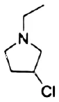
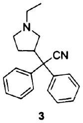
α-알킬화 · 페닐 두 개 + CN이 음전하를 받아 α-H가 산성 → NaH로 카바니온 → 피롤리딘의 C–Cl을 SN2. (교재 본문은 NaNH₂로 적음)
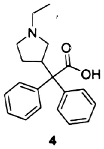
니트릴 산 가수분해 · 4차 탄소 옆이라 막혀서 강산·고온·오래.
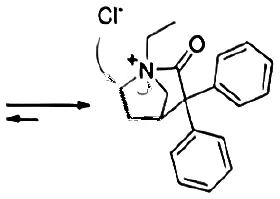
피롤리딘 N이 산염화물을 분자내로 공격 → 아실암모늄(N⁺) 바이사이클릭 중간체. N⁺가 이탈기가 되어 Cl⁻의 공격을 기다린다.
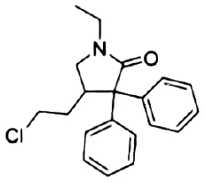
고리 재배열 · Cl⁻가 아실암모늄의 덜 막힌 탄소를 SN2 → 원래 피롤리딘 고리가 열리고, 대신 C=O–N의 피롤리디논(락탐)이 남는다. 곁사슬 끝에 CH₂Cl.
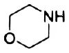
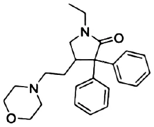
SN2 아민화 · morpholine N이 CH₂–Cl 치환 → 이후 HCl 염.
pyridylpropanone에 HC(OEt)₃로 에톡시메틸렌(엔올 에테르)을 달고 → malononitrile 1,4-부가 → EtOH 제거 → 분자내 고리화로 pyridin-2-one을 닫는다. 2단계. (합성법 2: ethoxymethylenemalononitrile로 한 번에)
| 단계 | 핵심반응 | 무엇이 바뀌나 |
|---|---|---|
| 1 | 축합 (orthoformate → enol ether) | α-CH₂ → C=CH–OEt |
| 2 | Michael → 제거 → 분자내 고리화 | enone + CH₂(CN)₂ → pyridin-2-one |
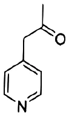
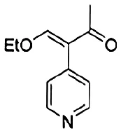
orthoformate 축합 · 산에서 HC(OEt)₃가 EtOH를 잃고 oxonium(친전자체) → 케톤 엔올의 α-C가 공격 → EtOH 이탈 → EtO–CH=C (enone 2).
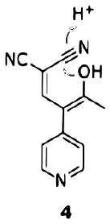
malononitrile 카바니온이 1,4-부가 → EtO⁻ 제거 → 니트릴과 엔올이 분자내 고리화.
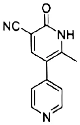
1,4-부가 → 제거 → 고리화 · 니트릴 하나는 고리 C=O(아마이드)가 되고 다른 하나는 CN으로 남는다 → pyridin-2-one + 5-CN.
Hantzsch 3성분 one-pot 1단계. 2-nitrobenzaldehyde 1당량 + methyl acetoacetate 2당량 + NH₃ → 1,4-dihydropyridine.
| 단계 | 핵심반응 | 무엇이 바뀌나 |
|---|---|---|
| 1 | Hantzsch DHP synthesis (KEY 18-1) | 알데하이드 + β-ketoester ×2 + NH₃ → 1,4-DHP |
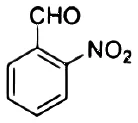
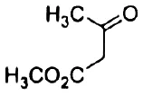
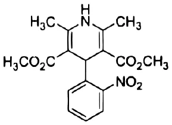
Hantzsch (KEY 18-1) · 알데하이드 + β-ketoester → enone(4) (aldol/Knoevenagel 축합), β-ketoester + NH₃ → enamine(5) → 1,4-부가 → 분자내 축합(−H₂O) → 1,4-DHP. 양쪽 에스터가 같아 대칭 · 비키랄.
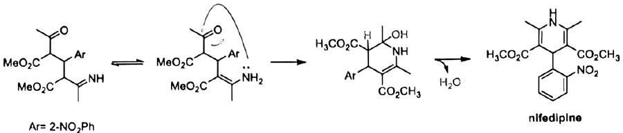
enone과 enamine이 만나 1,4-부가 → 고리 닫힘 → 탈수.
에스터 α-C에 NaNH₂로 iPr → allyl 두 번 알킬화(4차 탄소) → 에스터를 산염화물로 → hydroboration(말단 B) → NH₃로 아마이드 → H₂O₂로 OH → 한 시약으로 CONH₂→CN + OH→Cl → 아민 SN2. 9단계.
| 단계 | 핵심반응 | 무엇이 바뀌나 |
|---|---|---|
| 1 | α-알킬화 (iPr) | α-CH₂ → CH–iPr |
| 2 | α-알킬화 (allyl) | CH → C(iPr)(allyl) 4차 |
| 3 | 에스터 가수분해 | CO₂Me → CO₂H |
| 4 | 산염화물 (PCl₅) | CO₂H → COCl |
| 5 | Hydroboration | C=C → 말단 C–B |
| 6 | 아마이드화 (NH₃) | COCl → CONH₂ |
| 7 | 산화 (H₂O₂) | C–B → C–OH |
| 8 | 탈수 + 염소화 | CONH₂ → CN, OH → Cl |
| 9 | SN2 N-알킬화 | CH₂Cl → CH₂–N(Me)R |
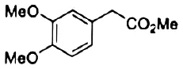
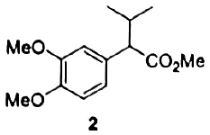
α-알킬화 · NaNH₂가 에스터 α-H를 떼어 엔올레이트 → iPr–I SN2.
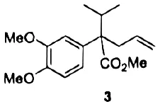
같은 방법으로 allyl 하나 더 → 4차 탄소 (나중에 CN이 붙는 C2).
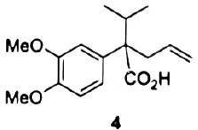
에스터 가수분해.
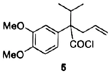
COOH → COCl (PCl₅).
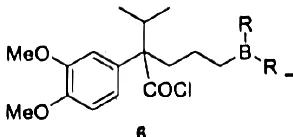
Hydroboration · 붕소(친전자)가 덜 막힌 말단 탄소, H는 안쪽 → anti-Markovnikov, syn 첨가. 부피 큰 보레인이라 위치선택성↑.
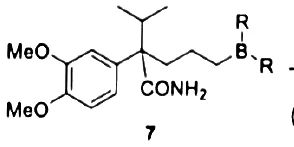
COCl → CONH₂.
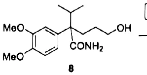
산화 · H₂O₂가 B를 공격 → 알킬 이동 → C–B가 C–OH로 (입체 유지). 말단 1차 알코올.
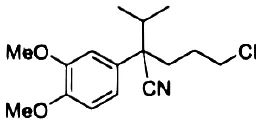
한 시약으로 두 변환 · CONH₂ → C≡N(탈수), CH₂OH → CH₂Cl(SN2). 탈수 시약 대안: SOCl₂, POCl₃, P₂O₅.
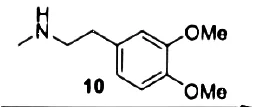
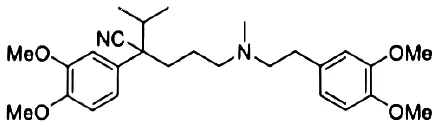
SN2 N-알킬화 · 2차 아민이 CH₂Cl 치환 → 이후 HCl 염.
Darzens로 만든 glycidate(에폭사이드)를 티올(SH)이 열고 → 에스터 가수분해 → 분자내 아마이드화로 7원 benzothiazepinone → OH를 Ac₂O로 아세틸화. 4단계 (Darzens는 출발물질 만들기).
| 단계 | 핵심반응 | 무엇이 바뀌나 |
|---|---|---|
| 0 | Darzens (KEY 18-2) | ArCHO + ClCH₂CO₂Me → glycidic ester |
| 1 | 에폭사이드 개환 (SH) | 에폭사이드 → C–S + OH |
| 2 | 에스터 가수분해 | CO₂Me → CO₂H |
| 3 | 락탐화 (7원) | NH + COOH → 고리 아마이드 |
| 4 | O-아세틸화 | OH → OAc |
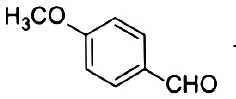
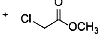
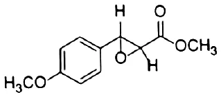
Darzens (KEY 18-2) · α-할로에스터 엔올레이트가 알데하이드에 부가 → 알콕사이드가 옆 C–Cl을 분자내 SN2 → α,β-에폭시 에스터(glycidic ester).
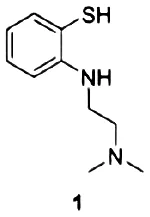
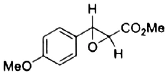
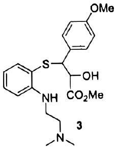
에폭사이드 개환 · SH가 NH보다 친핵성 큼 → S가 벤질 탄소를 공격 → C–S + 옆 C–OH (trans).
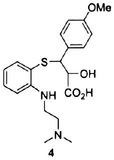
에스터 가수분해 → AcOH로 산.
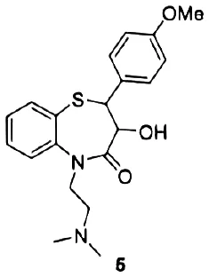
분자내 아마이드화 · 아릴 NH + COOH → 탈수 → 7원 락탐 (1,5-benzothiazepin-4-one).
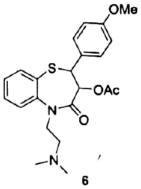
O-아세틸화 · 3-OH → OAc (이름의 3-yl acetate) → 이후 HCl 염.
benzofuran C-2에 F-C 아실화 → Wolff–Kishner로 C=O를 CH₂(butyl) → C-3에 두 번째 F-C(SnCl₄) → pyridine·HCl로 탈메틸 → Williamson으로 diethylaminoethyl. 5단계.
| 단계 | 핵심반응 | 무엇이 바뀌나 |
|---|---|---|
| 1 | F-C 아실화 (C-2) | C2–H → C2–COPr |
| 2 | Wolff–Kishner (KEY 18-3) | C=O → CH₂ |
| 3 | F-C 아실화 (C-3) | C3–H → C3–COAr |
| 4 | O-탈메틸화 | OMe → OH |
| 5 | Williamson 에테르 | OH → OCH₂CH₂NEt₂ |
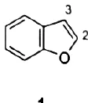
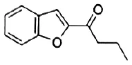
F-C 아실화 · benzofuran은 C-2가 먼저: O⁺ 공명구조가 불안정해 C-2 공격 중간체 쪽 공명 구조가 더 많다 (indole은 C-3).
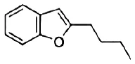
Wolff–Kishner (KEY 18-3) · 하이드라존 → 강염기·가열 → N₂ 방출 → 카바니온 양성자화 → C=O가 CH₂.
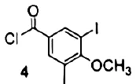
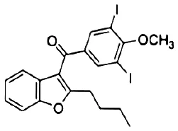
두 번째 F-C · C-2가 막혔으니 C-3에 아로일기. Lewis 산 SnCl₄.
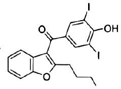
탈메틸화 · pyridine·HCl 용융 → OMe의 메틸을 Cl⁻가 SN2 → 페놀.
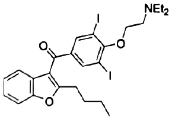
Williamson · 페녹사이드가 알킬 Cl을 SN2 → 에테르 → 이후 HCl 염.
L-Ala-L-Pro 다이펩타이드와 α-케토에스터를 NaBH₃CN 환원적 아민화로 한 번에 잇고, 생긴 부분입체이성질체(S,S,S : R,S,S = 55 : 45)를 염 재결정으로 분리.
| 단계 | 핵심반응 | 무엇이 바뀌나 |
|---|---|---|
| 1 | Imine 형성 (in situ) | NH₂ + C=O → C=N |
| 2 | 환원적 아민화 (NaBH₃CN) | C=N → CH–NH (55 : 45) |
| 3 | 부분입체이성질체 분리 | 염 재결정 → S,S,S |
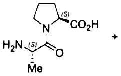
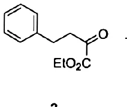
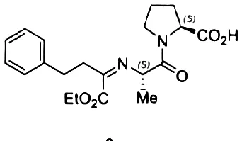
이민 형성 · Ala의 NH₂가 케톤 C=O를 공격 → 탈수 → C=N (분리하지 않음).
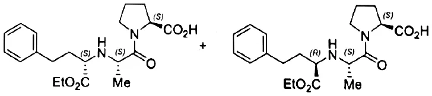
환원적 아민화 · NaBH₃CN은 특정 pH에서 C=O는 그대로, 이민(이미늄)만 환원 → one-pot. 새 키랄 중심이 생겨 두 부분입체이성질체.
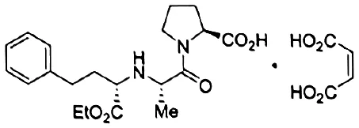
염 재결정 · 부분입체이성질체 염은 용해도가 달라 S,S,S만 결정. ※ 본문은 mandelic acid, 스킴은 maleic acid로 적혀 있다.
경로 1: 7원 락탐 α-C에 PCl₅ 이중 염소화 → Cl 하나만 수소화분해 → NaN₃ SN2 → N-알킬화 → 아자이드 환원 → 주석산 분할 → 환원적 아민화. 경로 2: 1-tetralone → 옥심 → Beckmann(7원 락탐) → Gabriel → 분할 → nosylate SN2(입체 반전).
| 단계 | 핵심반응 | 무엇이 바뀌나 |
|---|---|---|
| 1 | α-이중 염소화 (PCl₅) | CH₂ → CCl₂ |
| 2 | 수소화분해 | CCl₂ → CHCl |
| 3 | SN2 아자이드화 | C–Cl → C–N₃ |
| 4 | N-알킬화 (PTC) | N–H → N–CH₂CO₂Et |
| 5 | 아자이드 환원 | N₃ → NH₂ |
| 6 | 광학분할 (주석산 + cat. PhCHO) | rac → (S) |
| 7 | 환원적 아민화 | NH₂ + 케토에스터 → 2차 아민 |
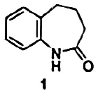
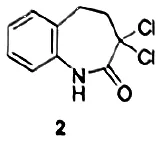
α-이중 염소화 · 락탐 α-CH₂에 Cl 두 개.
수소화분해 · C–Cl 하나만 C–H로 (NaOAc가 HCl 포집).
SN2 · N₃⁻가 C–Cl 치환 (극성 비양성자성 DMSO).
락탐 N-알킬화 · TBAB = 상간이동촉매.
아자이드 환원 · N₃ → NH₂ (+N₂).
분할 + 라세미화 · PhCHO가 남은 (R)-아민과 이민을 만들어 라세미화 → (S)-주석산염만 계속 침전 → 79% (50%를 넘음).
환원적 아민화 · Enalapril과 같은 케토에스터 + NaBH₃CN.
※ 교재 머리 그림의 benazepril은 에틸 에스터가 남은 7과 같다. 마지막 가수분해물 8은 활성 대사체형.
α-브롬화 → 옥심.
Beckmann (KEY 19-1) · 옥심 OH 양성자화 → 이탈하며 anti 쪽 아릴이 N으로 이동 → nitrilium → H₂O → 아마이드. 6원 케톤 → 7원 락탐 (고리 확장).
Gabriel (KEY 19-2) · 프탈이미드 음이온이 C–Br을 SN2. N이 하나만 붙어 과알킬화 없음.
락탐 N-알킬화.
탈프탈화(ethanolamine) → 1차 아민 → 주석산 분할(PhCHO 라세미화).
SN2 입체 반전 · (R)-nosylate를 아민이 뒤에서 공격 → (S). HCl로 t-Bu 에스터 제거.
사이클로펜탄온 엔아민의 Stork 알킬화 → 가수분해 · 분자내 이민 · 수소화로 바이사이클릭 아미노산 → 벤질 에스터로 보호 → DCC 커플링(Steglich 원리) → Pd/C 탈벤질. 5단계.
| 단계 | 핵심반응 | 무엇이 바뀌나 |
|---|---|---|
| 1 | Stork 엔아민 알킬화 | 엔아민 β-C → C–CH₂CH(NHAc)CO₂Et |
| 2 | 가수분해 → 분자내 이민 → 환원 | 바이사이클릭 아미노산 |
| 3 | 벤질 에스터화 | CO₂H → CO₂Bn |
| 4 | DCC 커플링 (KEY 19-3) | COOH + NH → 아마이드 |
| 5 | 탈벤질 (H₂, Pd/C) | CO₂Bn → CO₂H |
Stork 엔아민 알킬화 · 엔아민 β-C가 C–Cl을 SN2 → 이미늄 → 가수분해 → α-치환 케톤.
HCl이 NHAc·에스터를 풀어 아미노산 → NH₂가 케톤과 분자내 이민(5원) → H₂/Pd-C로 환원 → octahydrocyclopenta[b]pyrrole.
COOH 보호 · SOCl₂ → COCl → BnOH. 나중에 수소화로 쉽게 뗀다.
DCC 커플링 (KEY 19-3) · DCC가 COOH를 O-acylisourea로 활성화 → 아민 공격 → 아마이드 + DCU(난용성 부산물).
수소화분해 · 벤질 에스터만 끊겨 COOH, 에틸 에스터는 남는다.
Nifedipine과 같은 Hantzsch지만 양쪽이 달라서 enamine(2)과 Knoevenagel enone(5)을 따로 만들어 합친다 → 아자이드 환원 → besylate. (−)-체는 E1cB + 키랄 에스터 분리 + 에스터교환으로.
| 단계 | 핵심반응 | 무엇이 바뀌나 |
|---|---|---|
| 1 | 엔아민 형성 (NH₄OAc) | C=O → C(NH₂)=C |
| 2 | Knoevenagel | ArCHO + 아세토아세테이트 → 벤질리덴 |
| 3 | Hantzsch (KEY 19-4) | enamine + enone → 1,4-DHP |
| 4 | 아자이드 환원 | N₃ → NH₂ |
| 5 | besylate 염 | + PhSO₃H |
엔아민 · 케톤 + NH₃(NH₄OAc) → 이민 → 호변이성 → H₂N–C=C (Hantzsch의 enamine 성분).
Knoevenagel · 활성 메틸렌 + ArCHO → 부가 → 탈수 → α,β-불포화 (Hantzsch의 enone 성분).
Hantzsch (KEY 19-4) · enamine이 enone에 1,4-부가 → 고리축합 → 1,4-DHP. 에스터가 서로 달라 C4 키랄.
아자이드 환원 · N₃ → NH₂ (아민을 처음부터 넣으면 반응에 끼어드니 N₃로 숨겨 둠).
염 형성 · benzenesulfonic acid 염.
Hantzsch 3성분.
E1cB · CN 옆 α-H가 빠지며 아크릴로니트릴이 떨어져 카복실산.
키랄 알코올과 에스터 → 부분입체이성질체 → 컬럼 분리.
에스터교환 · 키랄 보조기를 에틸 에스터로 교체 (Na⁺ 킬레이션으로 위치 선택).
(S)-(−)체가 (R)-(+)체보다 약 1,000배 강하지만 실제로는 라세미체로 쓴다.
벤질 브로마이드를 OAc로 SN2 → 가수분해 · Swern 산화로 CHO → L-valine 에스터와 환원적 아민화 → pentanoyl N-아실화 → Bu₃SnN₃로 CN → 테트라졸 + 에스터 가수분해. 5단계.
| 단계 | 핵심반응 | 무엇이 바뀌나 |
|---|---|---|
| 1 | SN2 아세톡시화 | CH₂Br → CH₂OAc |
| 2 | 가수분해 + Swern (KEY 19-5) | CH₂OAc → CH₂OH → CHO |
| 3 | 환원적 아민화 | CHO + Val-OMe → CH₂–NH |
| 4 | N-아실화 | NH → N–CO(CH₂)₃CH₃ |
| 5 | 테트라졸 형성 + 가수분해 | CN → tetrazole, CO₂Me → CO₂H |
SN2 · AcO⁻가 벤질 C–Br 치환.
Swern (KEY 19-5) · DMSO + (COCl)₂ → chlorosulfonium → 알코올이 붙어 alkoxysulfonium → Et₃N로 ylide → CHO (카복실산까지 안 감, 저온).
환원적 아민화 · CHO + Val NH₂ → 이민 → NaBH₃CN.
N-아실화 · 2차 아민 + 산염화물, Et₃N은 HCl 포집.
테트라졸 · 니트릴 + 아자이드 [3+2] 고리화 → 1H-tetrazole (COOH 생물학적 등가체). 이어 메틸 에스터 가수분해.
구조식은 골격 구조입니다. 선 끝은 메틸기, 꺾인 지점은 탄소입니다. 카드 윗선 색: 갈색 = 출발물질, 회색 = 중간체, 보라 = 시약·반응 상대, 청록 = 최종 생성물. 노란 배경은 그 단계에서 가장 자주 묻는 포인트입니다. 쐐기(굵은 삼각형) = 앞으로, 점선 쐐기 = 뒤로.
© 면역반 민서정리 @water_.color_